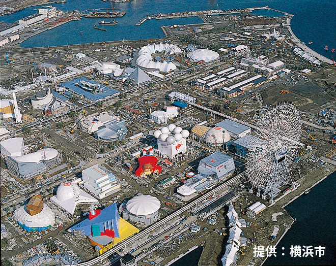

横浜の歴史に関する質問
1964年、東海道新幹線開通
質問：
- 1964年に新幹線が開通した当時の横浜の様子を覚えていますか？
- ご家族と一緒に新幹線で旅行されたことはありますか？もしあるなら、いつ、どこへ行き、どのような体験をされましたか？
- 新幹線の開通は、横浜での生活にどのような影響を与えたと思いますか？
1970年、横浜高島屋の建設
質問：
- 高島屋が開業した当時のことを覚えていますか？
- 当時の買い物環境と現在を比べると、どのように変わったと思いますか？
- 高島屋の開業はあなたの生活にどんな影響を与えましたか？
1983年、横浜美術館の開館
質問：
- 横浜美術館に行ったことはありますか？そのときの展覧会の様子はどうでしたか？
- 昭和時代、美術や芸術活動は流行していましたか？また、それらに参加されたことはありますか？
1985年、みなとみらい21開発計画

質問：
- みなとみらい開発計画が始まったころの印象はどのようなものでしたか？現在の開発結果は、当時の計画のイメージ通りですか？
- 開発以前の地域の様子を覚えていますか？そのエリアに訪れたことはありますか？
- みなとみらいの開発はあなたの生活にどのような影響を与えましたか？
1990年、横浜市営地下鉄の建設
質問：
- 地下鉄が建設される前の横浜の交通状況について、どのような印象を持っていましたか？
- 地下鉄の建設は、あなたの通勤や生活にどのような影響を与えましたか？
- 地下鉄建設中、街や周辺環境にどのような変化がありましたか？